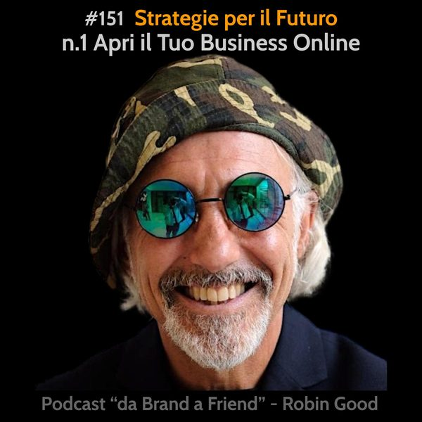

Strategie per il Futuro: #1 Apri il Tuo Business Online

*Strategie per il Futuro: #1 Apri il Tuo Business Online*
Il primo consiglio che darei a chiunque sta seriamente mettendo in discussione il suo futuro alla luce dei recenti avvenimenti globali che hanno rapidamente trasformato le vite della maggior parte delle persone così come le loro opportunità lavorative.
Il mondo si è improvvisamente spostato tutto online.
Per chi ha quindi un'attività commerciale, un negozio, un servizio o anche un'attività legata alla salute, alla consulenza o alla formazione che richiedano la presenza fisica delle persone, le cose sono diventate improvvisamente molto difficili.
Sulla base della mia esperienza sul campo, nell'assistere proprio questo tipo di attività e imprenditori, il primo suggerimento utile che condivido è quello di non attendere oltre. Se prima era utile avere una presenza online, ora è diventato indispensabile.
E secondo me, questo vale anche per chi non ha smesso di lavorare a causa di queste trasformazioni, per chi ha ancora clienti attivi e per chi soprattutto sta viaggiando a vista nell'attesa che le cose tornino a migliorare.
Soprattutto per queste ultime, il mio invito è quello di fermarsi e di valutare bene i pro e i contro di attendere oltre.
Lavorando invece da subito sul pianificare e sull'iniziare a costruire una propria presenza professionale online, i rischi si azzerano. Anche nel caso le cose dovessero tornare come erano una volta, non c'è nulla da perdere, ma tutto da guadagnare.
Per questo ho deciso di condividere in questo episodio, dieci ragioni valide per cui ha senso non esitare ancora e iniziare da subito a lavorare per poter continuare a operare commercialmente anche laddove dovessero esserci nuovi impedimenti al potersi muovere e incontrare liberamente con altri fisicamente.
1) La nuova emergente economia sembra voler specificamente eliminare la maggior parte dei piccoli business che operano nel mondo fisico.
2) Investire nell'avviare il proprio business online è un investimento utilissimo comunque vadano le cose.
3) Un business online è molto più scalabile di un business fisico.
4) I margini operativi di guadagno sono più ampi e i costi di gestione sono nettamente più bassi.
5) Online le persone sono già abituate a pagare prima. Basta inseguire clienti insoluti.
6) Online ci sono già persone che stanno attivamente cercando qualcuno che abbia le tue competenze e know-how per risolvere i loro problemi.
7) Ci sono moltissimi tool, app, strumenti e servizi per poter aprire un business online senza dover essere un ingegnere elettronico e senza dover chiedere un mutuo alla banca.
8) Ci sono altrettanti gruppi, comunità ed esperti pronti a consigliarti, dari suggerimenti e feedback e a condividere con te le loro esperienze e scoperte.
9) Avviare un'attività online espande in maniera esponenziale le tue possibilità di poter andare a vivere dove vuoi, non dipendendo più dalla necessità di vivere in una grande città o centro abitato.
10) Un'attività online che funziona è la miglior scelta che un imprenditore possa fare oggi allorché desidera cominciare a liberare tempo personale per vivere davvero la vita.
-------------
Info Utili
• Musica di questa puntata:
"Check It Out" by Mountaineer - disponibile su Uppbeat:
https://uppbeat.io/t/mountaineer/check-it-out
• Dammi feedback:
critiche, commenti, suggerimenti, idee e domande unendoti al gruppo Telegram https://t.me/@RobinGoodPodcastFeedback
• Ascolta e condividi questo podcast:
https://gopod.me/RobinGood
• Diventa sostenitore:
sostieni il lavoro di Robin Good e tutti i contenuti e risorse utili che condivide costantemente
https://robingood.com/patreon-sharewood-community-campus
https://Patreon.com/Robin_Good
• Seguimi su Telegram:
https://t.me/RobinGoodItalia
(tutti i miei contenuti, immagini, audio e video in un solo canale)
oppure
https://facebook.com/RobinGoodItalia/
(Pagina Facebook ufficiale)
• Newsletter:
http://robingood.it/toptools-newsletter
• Per info e richieste:
mailto: Ludovica.Scarfiotti@robingood.it